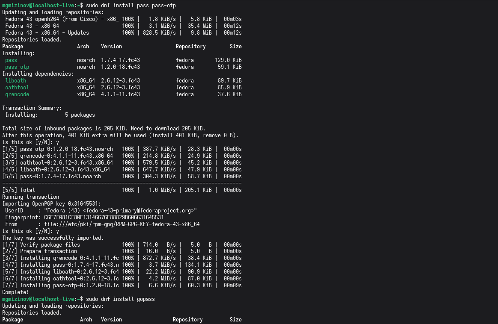
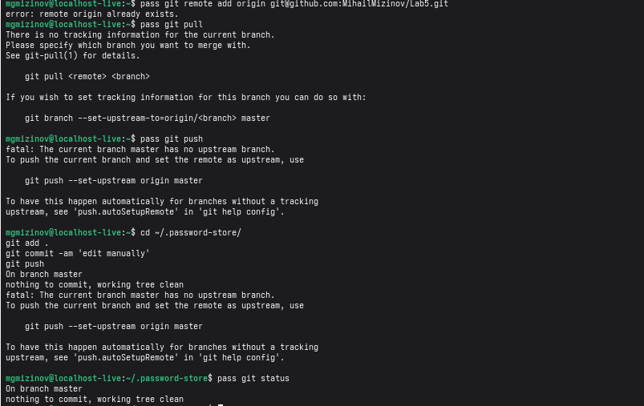
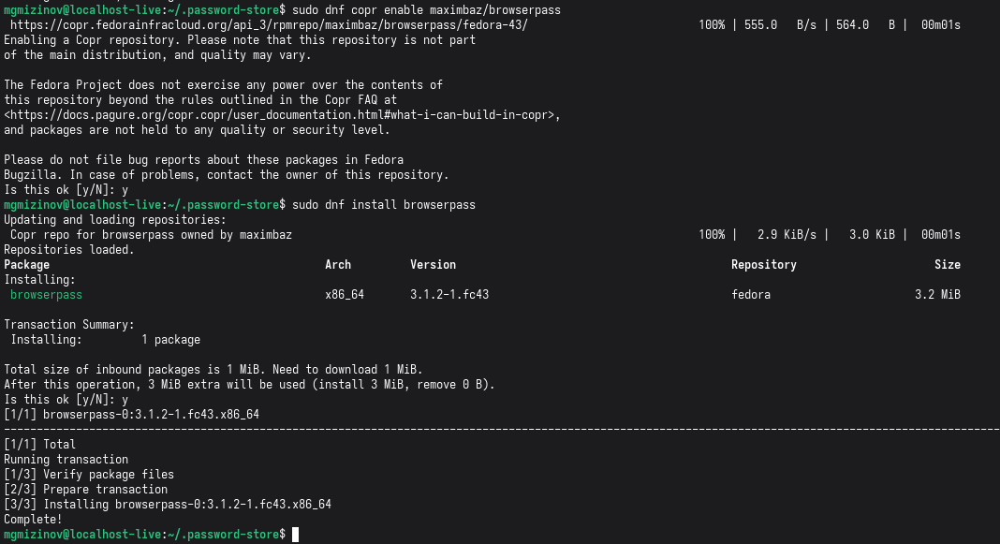
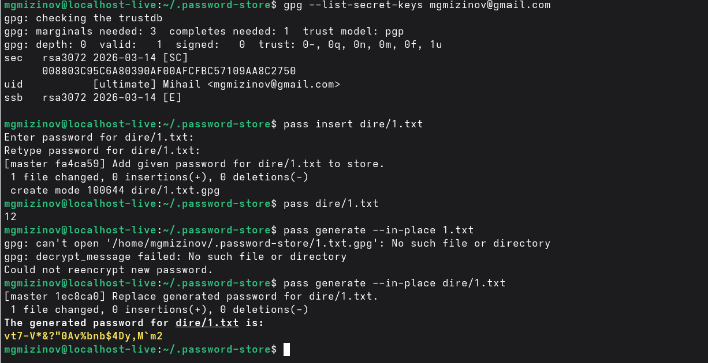
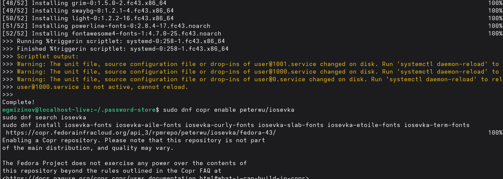
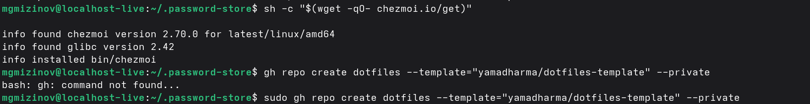
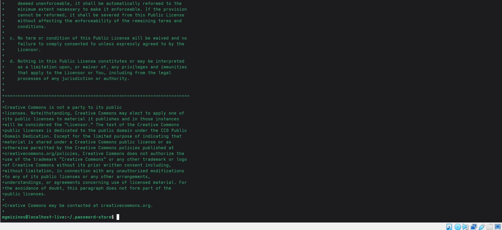
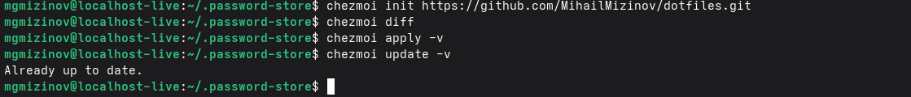
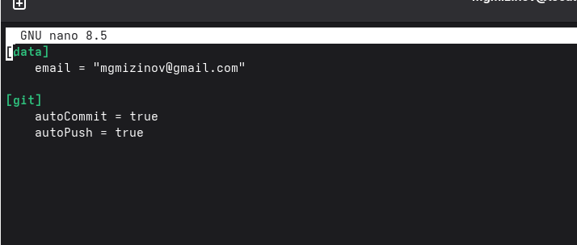

Лабораторная работа 5
Выполнил Мизинов Михаил НКАбд-04-25
Цель работы
Настройка рабочей среды.
Задание
Настроить рабочую среды.
Выполнение работы
Менеджер паролей pass
Установка

Настройка

Настройка интерфейса с броузером

Сохранение пароля

Управление файлами конфигурации Дополнительное программное обеспечение

Установка бинарного файла и создание собственного репозитория с помощью утилит

Подключение репозитория к своей системе

Использование chezmoi на нескольких машинах

Ежедневные операции c chezmoi

Вывод
Успешно настроил рабочую среду.